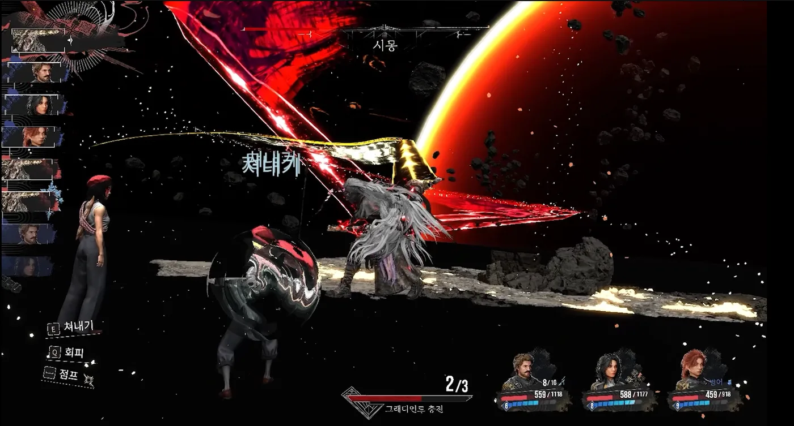
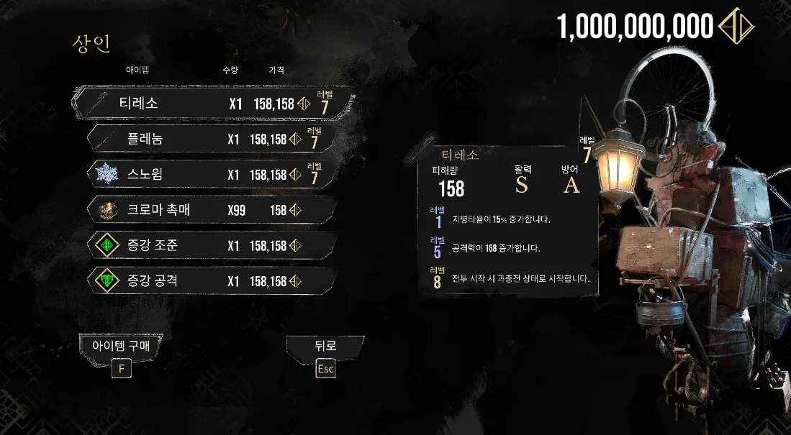
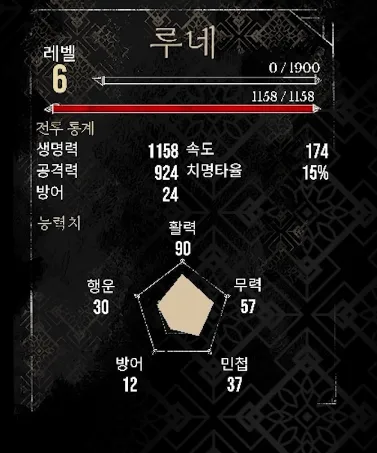
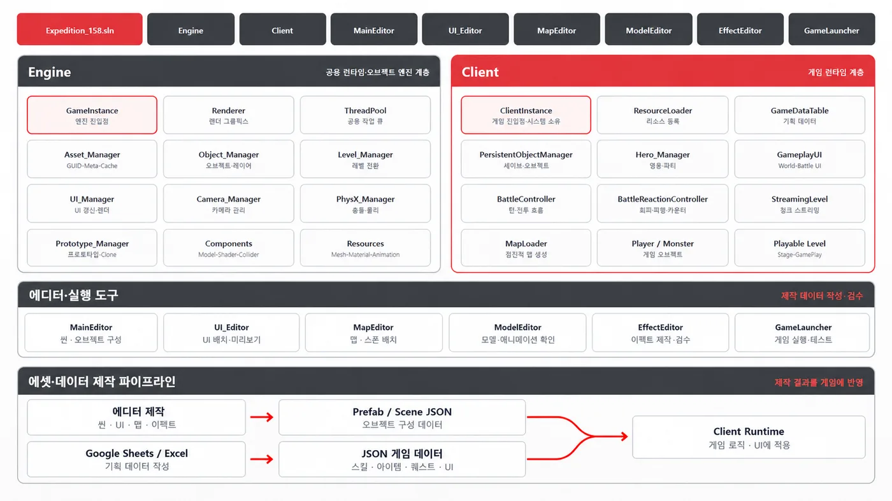
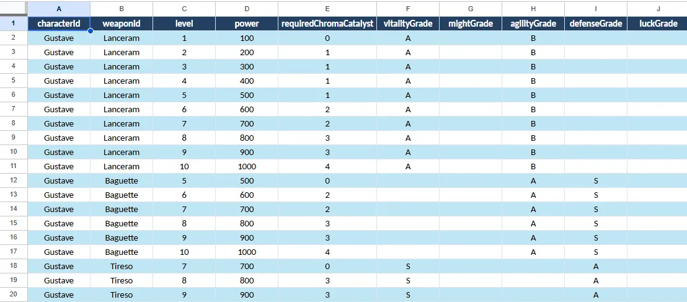
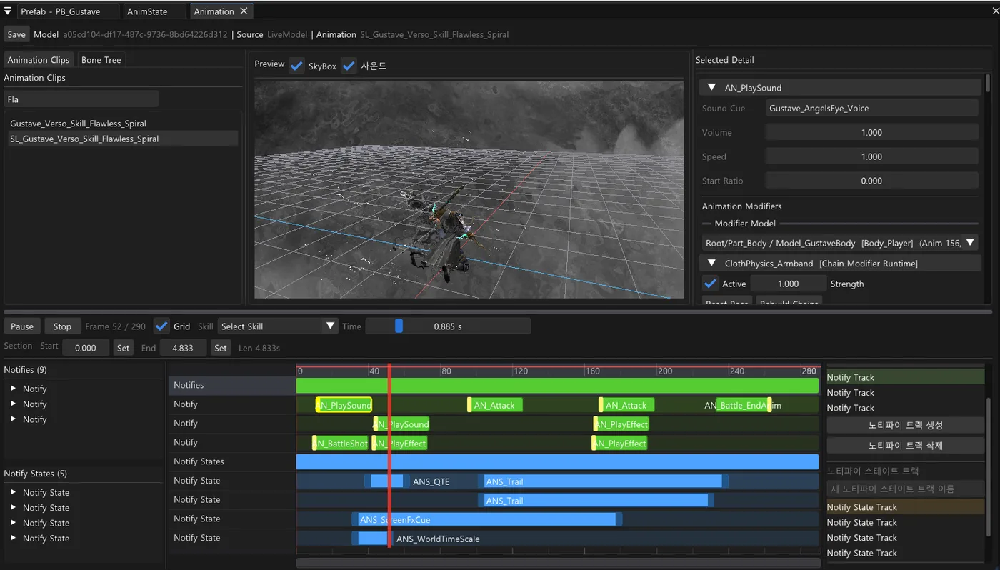
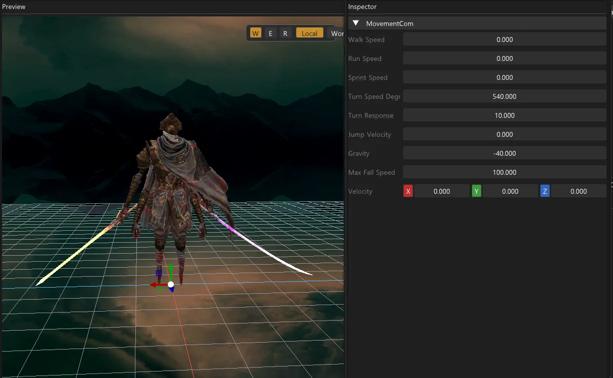
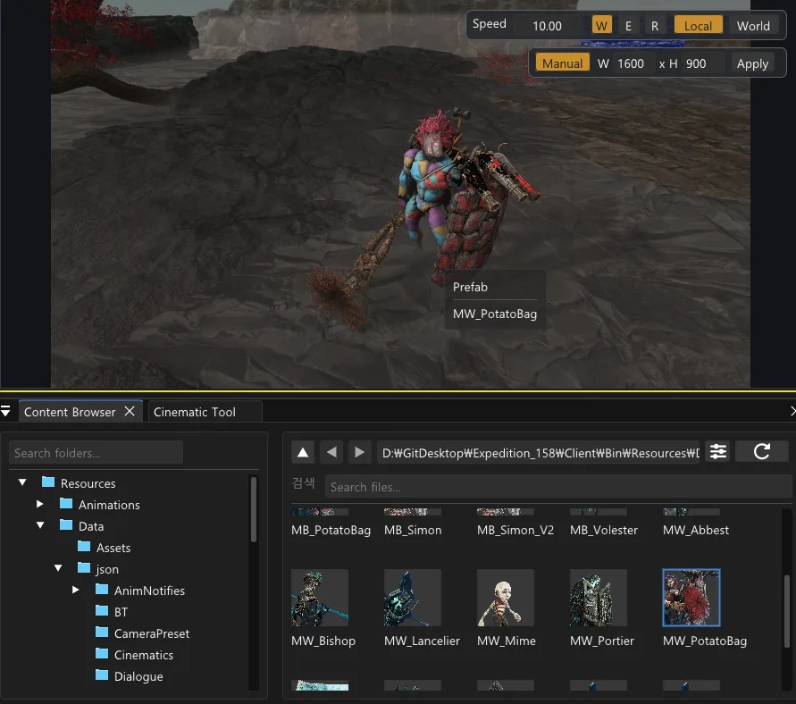
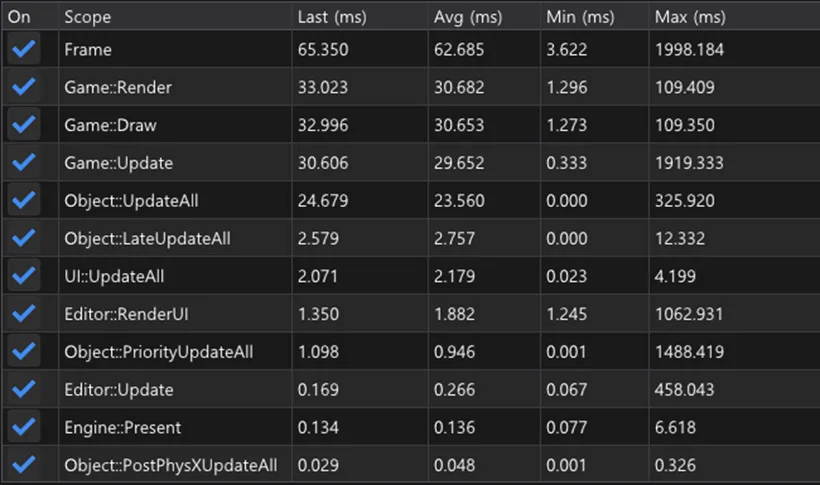

플레이 장면






대표 기능

엔진 · 게임 · 에디터를 나눈 구조
엔진, 게임 클라이언트, 에디터를 따로 나눠 8명이 서로 덜 부딪히며 작업할 수 있게 했습니다.

구글 시트로 관리하는 게임 데이터
수치는 구글 시트에서 고치고 JSON으로 바꿔 게임이 읽습니다. 기획 수정에 코드 빌드가 필요 없습니다.

애니메이션 이벤트로 전투 타이밍
공격 판정, 사운드, 이펙트, QTE를 애니메이션 타임라인 위에 놓고 저장합니다.
파티 이동과 카메라
동료가 앞사람의 경로를 따라오고, 카메라는 벽에 가려지면 앞으로 당겨집니다.
직접 만든 도구
게임 화면에는 안 보이지만 작업 속도를 바꾼 에디터와 툴입니다.

메인 에디터
씬, 하이어라키, 인스펙터, 콘텐츠 브라우저를 한 화면에 두고, 에디터 안에서 바로 플레이해 보며 작업합니다.
GUID로 관리하는 에셋
리소스마다 메타 파일을 만들어 고유 GUID를 붙이고, 레지스트리에 모아 둡니다. 파일 위치나 이름이 바뀌어도 데이터는 GUID로 찾기 때문에 연결이 끊기지 않습니다. 에셋 약 15,000개를 시작할 때 다시 다 훑지 않고, 저장해 둔 레지스트리를 읽어 바뀐 것만 반영합니다.
화면과 파일에 함께 남는 로그
왼쪽 콘솔에 로그가 실시간으로 뜨고 Trace · Debug · Info · Warn · Error로 걸러 볼 수 있습니다. 같은 로그가 프로그램별 .log 파일로도 남아서, 문제가 생기면 어느 단계에서 터졌는지 파일을 열어 추적합니다.
시작 단계별 소요 시간
엔진 초기화, 레지스트리 로드 같은 시작 단계마다 걸린 시간을 로그로 남겨, 에디터가 느려지면 어디가 원인인지 바로 보입니다.

인스펙터
컴포넌트 값을 에디터에서 바로 고치고 프리팹으로 저장

콘텐츠 브라우저 · 프리팹 배치
프리팹을 끌어다 맵에 놓고 저장
애니메이션 노티파이 툴
타임라인에 이벤트를 배치

프로파일러
구간별 프레임 비용을 실시간으로 확인
기억에 남는 문제
고폴리곤 맵에서 떨어지던 프레임
원작이 UE5 Nanite를 전제로 만든 고밀도 메시라 그대로는 감당이 안 됐습니다. 직접 만든 프로파일러로 렌더링이 병목인 것을 확인하고, 거리별 LOD와 단순한 충돌 메시로 바꿔 해결했습니다.
구현 방식과 코드는 기술서에 자세히 정리했습니다.